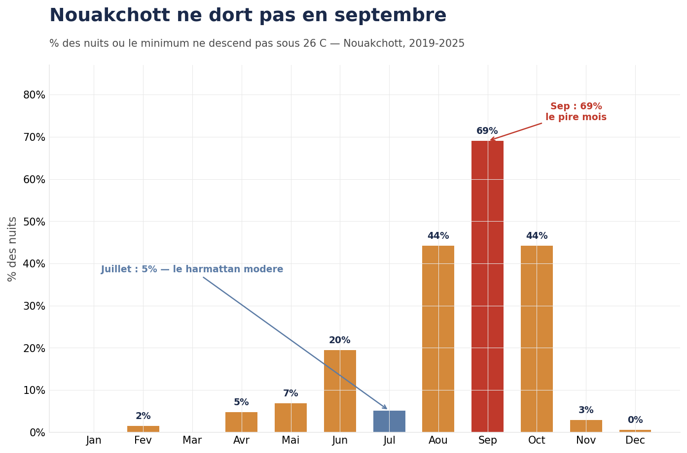
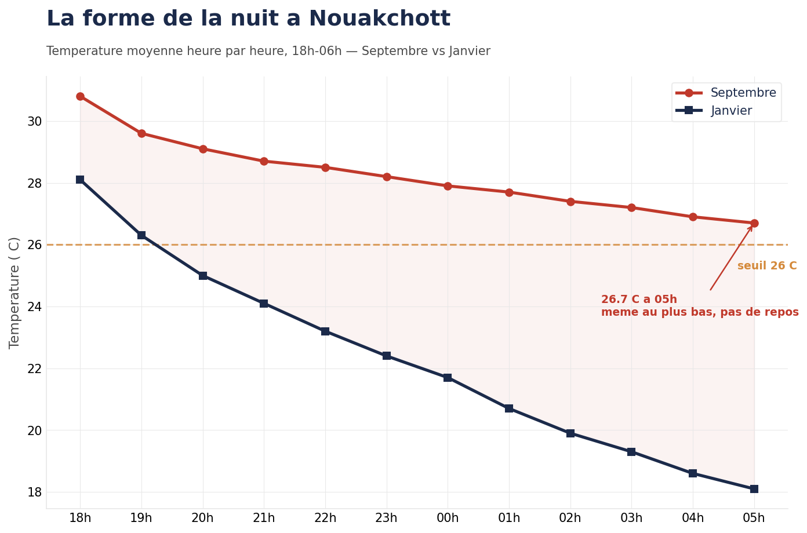
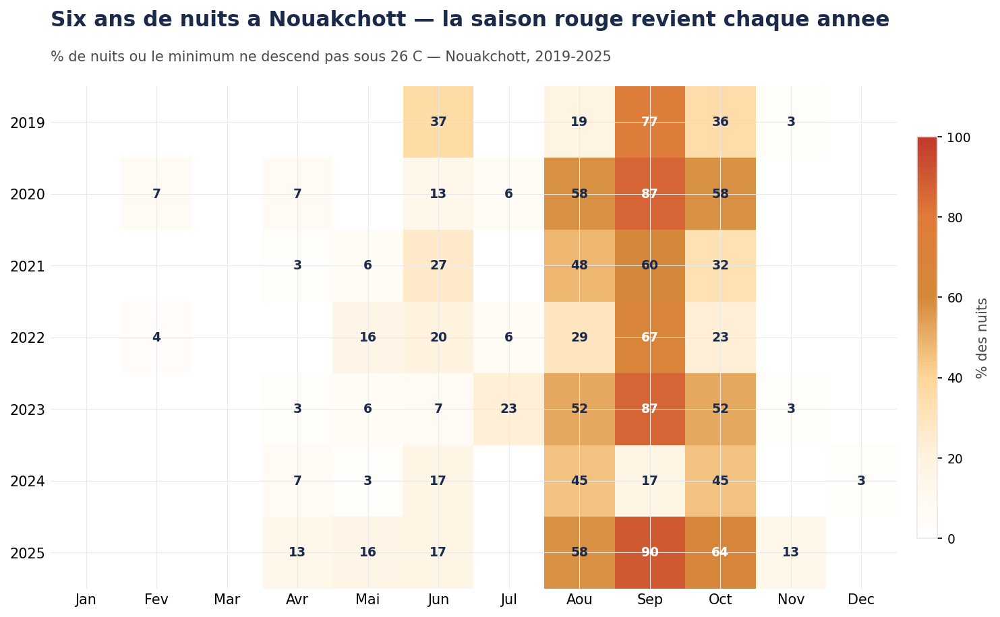
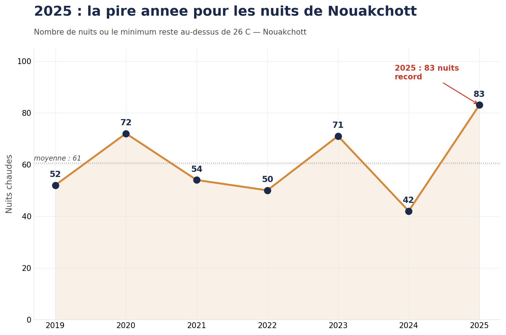

Bechar Agatt · Nouakchott, Mauritania — 2019–2025
Sahel Nights
There is a season in Nouakchott when nobody sleeps. From late August through October, the temperature doesn't drop at night. The power goes out. The AC stops. And the city empties — people leave for the interior, for abroad, for the legzer on the roadsides. Those who stay, endure.
In La Taxe Canicule, we measured what heat costs Nouakchott during the day — 730 hours lost per worker, $73M per year. Now we measure what happens at night.
"We counted the nights. We know what happens when the power dies. We know where people go."
01 — The Nights
September, not July.
Everyone in Nouakchott thinks July is the worst month. It has the highest daytime temperatures. But at night, the story reverses.
The harmattan — the dry Saharan wind — moderates July nights. Only 5% of July nights stay above 26°C. September is the opposite. Humidity climbs, the wind dies, and heat stored in concrete and sand radiates through the night. 69% of September nights never drop below 26°C.

Nouakchott, 2019–2025. Threshold: nighttime minimum > 26°C.
The WHO defines a "tropical night" at 25°C — a threshold designed for temperate cities where 25°C at night is rare. In Nouakchott, 25°C at night is pleasant. We use 26°C: still conservative for a Sahelian city, but the point where medical literature shows sleep breaks down and cardiovascular recovery stops.

Nouakchott, 2019–2025. Average temperature from 6PM to 6AM.
02 — The Blackout
When the night is hottest, the power goes out.
AC exists in Nouakchott. Hundreds of thousands of units sit in homes, offices, shops. But they're useless when SOMELEC can't keep the grid running.
SOMELEC has roughly 530 MW of installed capacity, 71% thermal. Peak demand in Nouakchott grows 6–7% per year. The grid depends on a single 225 kV line from Rosso — when it fails, as it did in March 2026 during Ramadan, the city goes dark.
We don't have access to SOMELEC outage data. No one does. What we have is the lived experience of every resident: when heat peaks, the grid fails. This is declared context, not a measured variable.
"AC in Nouakchott isn't comfort. It's a class marker. But even those who can afford it depend on a grid that doesn't keep its promises."
03 — The Exodus
Those who can leave, leave.
Every year, when nights become unlivable and the grid can't cope, Nouakchott empties. The vast majority of residents leave the city one way or another during the hottest months.
The wealthiest leave the country — for Europe, the Gulf, Morocco — for months at a time. Those who can't afford to go abroad return to their villages in the interior. Those who can't leave their jobs drive out of the city every evening to sleep in legzer — minimal roadside structures on the Akjoujt, Nouadhibou, or Route de l'Espoir roads — and come back to work in the morning. And those who can go nowhere — endure.

Nouakchott, 2019–2025. Threshold: nighttime minimum > 26°C.
longest streak (sept 2019)
worst year on record

Nouakchott, 2019–2025. Threshold: nighttime minimum > 26°C.
"We didn't model anything. We counted the nights the city doesn't sleep."
Companion project
La Taxe Canicule
What heat costs Nouakchott during the day. 80% of potential. 730 hours lost. $73M / year.